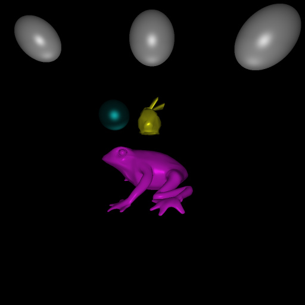

All settings for this image can be found in this (easily human readable) input file: first_input.txt
This image uses 4 different colors and parameter sets, and specular highlights can be seen on the spheres and bunny's tail.
Note that the resolution (image_x and image_y) in that file are the "true" resolution of the image, so the anti-aliased version presented here is 512x512.
It took 1 minute and 30 seconds to generate this image.

Input file: second_input.txt
It took 1 minute and 6 seconds to generate this image.

Input file: third_input.txt
It took 1 minute and 11 seconds to generate this image.